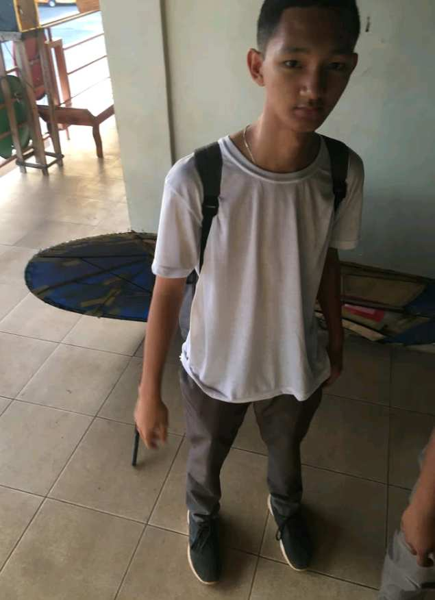

Paulo Kiunisala
"I was so nervous moving away from home, but I found my second family at the student center."
Johnmark Estrada
"Looking back, the internships and opportunities I had shaped my career in ways I never imagined!"

Gian Maandig
"Success is a journey, not a destination."
Justine Aspe
"If you can imagine it, you can achieve it. If you can dream in, you can become it."
Paulo Bars
“If you can do what you do best and be happy, you are further along in life than most people.”